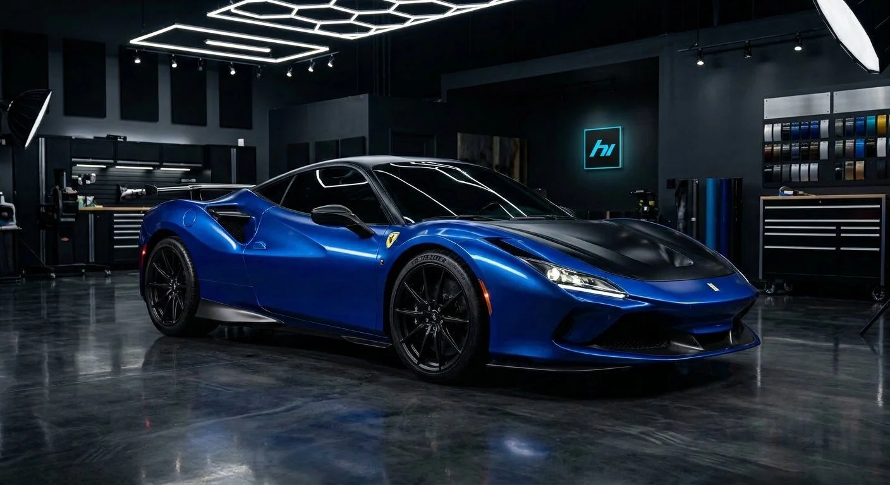
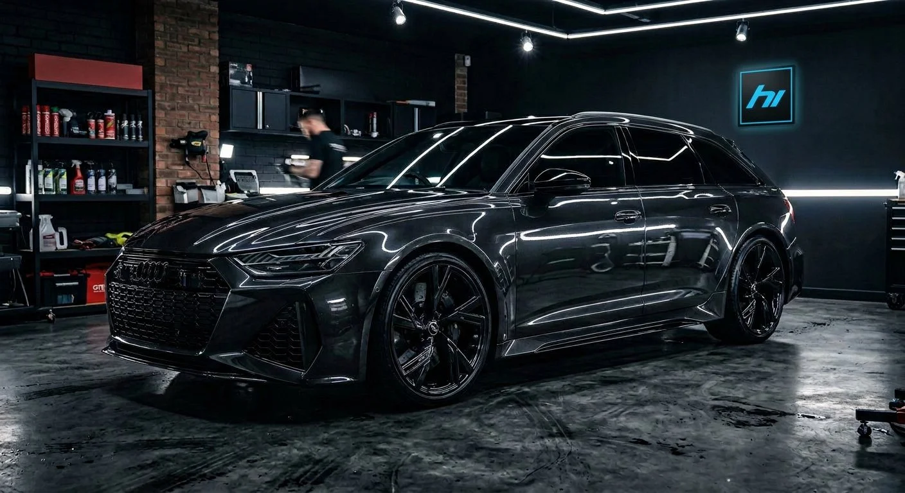
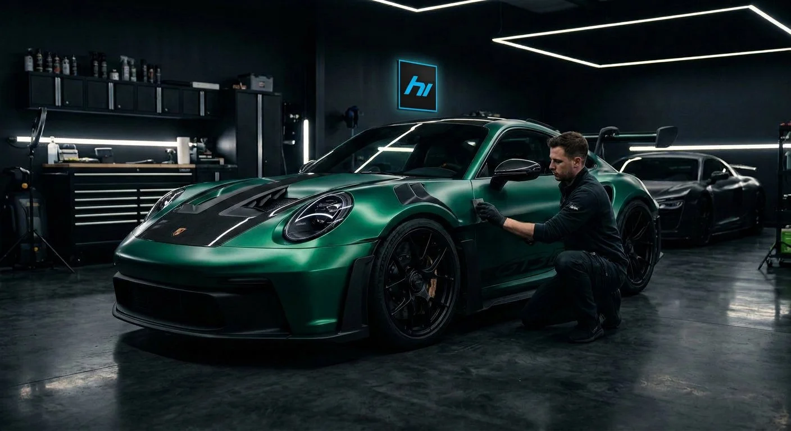

01
CAR WRAPPING
Zmiana koloru
Pełna zmiana charakteru auta bez ingerencji w fabryczny lakier. Połysk, satyna, mat, carbon i wykończenia specjalne.
Poznaj usługę ↗
Szczecin · Mierzyn · od 15 lat
Car wrapping, PPF i branding flot. Projektujemy zmianę, przygotowujemy auto i wykonujemy aplikację z dokładnością, którą widać z bliska.
01 / OFERTA
Od zmiany koloru po ochronę lakieru i branding całej floty. Łączymy projekt, przygotowanie i aplikację w jednym miejscu.
CAR WRAPPING
Pełna zmiana charakteru auta bez ingerencji w fabryczny lakier. Połysk, satyna, mat, carbon i wykończenia specjalne.
Poznaj usługę ↗ 02
02PAINT PROTECTION FILM
Bezbarwna, samoregenerująca folia chroniąca lakier przed odpryskami, rysami i codziennym zużyciem.
Poznaj usługę ↗ 03
03FLEET BRANDING
Projekt, druk i aplikacja grafiki dla pojedynczych samochodów oraz powtarzalnych wdrożeń flotowych.
Poznaj usługę ↗
04FINISHING TOUCH
Przyciemnianie szyb, dechroming, elementy wnętrza i przygotowanie auta do aplikacji.
Poznaj usługę ↗
02 / O HI-GLOSS
Przy zmianie koloru albo ochronie lakieru efekt końcowy zaczyna się dużo wcześniej niż od przyłożenia folii.
Przygotowujemy samochód, pracujemy w kontrolowanych warunkach i dbamy o każdy detal wykończenia. Demontaż elementów, prowadzenie krawędzi i właściwy dobór materiału są częścią projektu — nie dodatkiem.
03 / PROCES
Bez zgadywania, bez niespodzianek. Każdy projekt prowadzimy przez cztery czytelne etapy.
Poznajesz możliwości, materiały i realny zakres projektu.
Ustalamy kolor, zakres, detale i sposób wykonania.
Auto trafia do pracowni i przechodzi pełne przygotowanie.
Precyzyjna aplikacja i kontrola każdego elementu przed odbiorem.
04 / REALIZACJE
05 / FAQ
Standardowa realizacja samochodu osobowego zajmuje zwykle kilka dni. Dokładny termin zależy od modelu, zakresu demontażu i wybranego materiału.
Profesjonalnie dobrana i aplikowana folia jest rozwiązaniem odwracalnym i może dodatkowo chronić fabryczną powłokę.
Wycena zależy od zakresu ochrony, modelu auta i wybranego systemu folii.
Tak. Przy brandingu możemy prowadzić projekt od koncepcji przez druk aż po aplikację.
06 / TWÓJ PROJEKT
Opowiedz nam o aucie i efekcie, który chcesz osiągnąć. Wrócimy z konkretną propozycją.